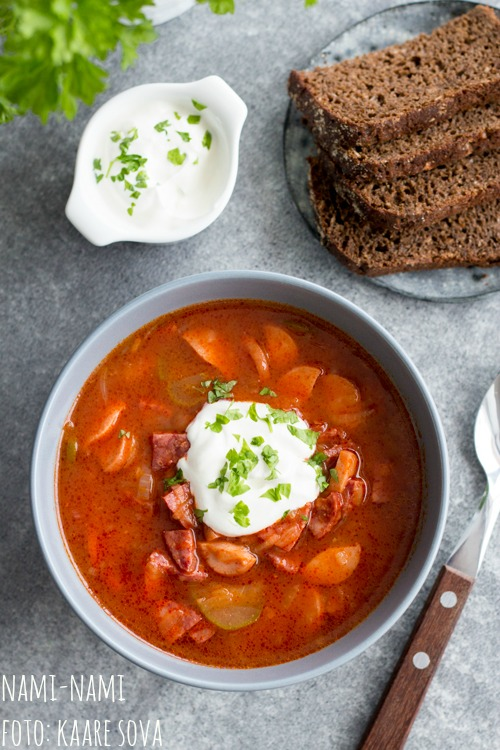

Seljanka

Paks materjal
| Koostisosad |
Kogus |
| Sibul |
3 tk |
| loorberileht |
3 tk |
| must pipar |
10 tera |
| hapukurk |
2-3 tk |
| viiner |
250g |
| poolsuitsuvorst |
300g |
Vedel materjal
| Koostisosad |
Kogus |
| õli |
4 sl |
| kuum vesi |
1 dl |
| tomatipasta |
100g |
| veiselihapuljong |
1l |
- Lõika sibulad pikuti neljaks ja seejärel iga sektor õhukesteks viiludeks.
- Kuumuta potis õli, lisa sibulad ning prae mõned minutid tasasel tulel, kuni sibul pehmenema hakkab.
- Lisa kuum vesi, pipraterad ja loorberilehed ning hauta tasasel kuumusel umbes veerand tundi, kuni sibulamass on pehme ja kuldkollane.
- Lisa tomatipüree ja hauta tasakesi veel mõned minutid.
- Lisa puljong, pikuti poolitatud ja õhukeselt viilutatud hapukurgid, tükeldatud suitsuvorst, viinerid ja soovi korral ka praejäägid.
- Lase seljankal aeglaselt keema tõusta, siis alanda kuumust ja lase kaane all 10 minutit tasakesi podiseda.
- Soovi korral tõsta loorberileht vahukulbiga välja.
- Maitsesta lõplikult, soovi korral lisa veidi sidrunimahla.
Allikas